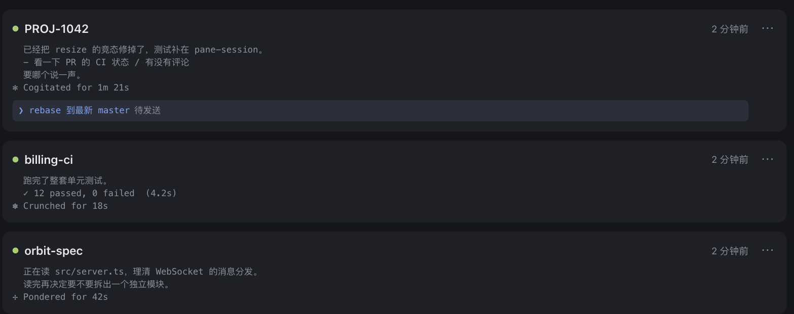
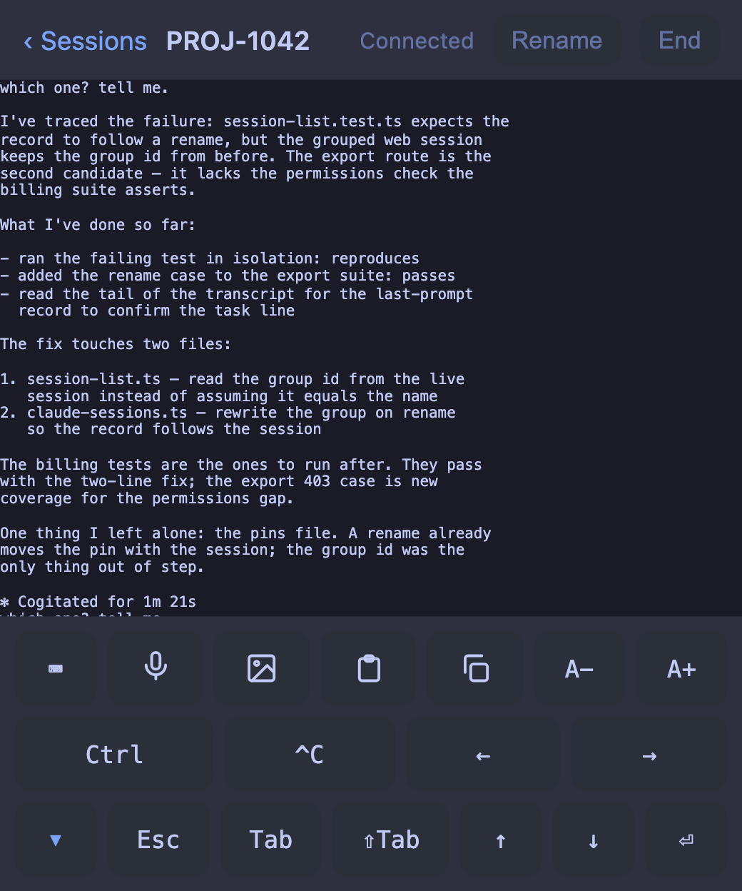

在手机上用 tmux
一个很小的 tmux 网页客户端。它把你机器上跑着的 tmux 会话列出来，让你在浏览器里打开
任意一个。我写它是为了在手机上看一眼 Claude Code，不用再走回电脑前。

会话列表。每个会话显示最后几行输出。Claude 打完一轮、在等你回复时，那个会话会亮起
绿点并排到最前面，省得你一个个点开看。

单个会话，全屏。手机键盘没有的键（Esc、Ctrl、方向键）放在底部的工具条里。
安装
需要 tmux 3.2 以上和 Bun。
$ bunx tmux-next
它监听 http://127.0.0.1:7682，列出本机的 tmux 会话。
它自己没有登录，只绑在 localhost。想从手机访问，前面得放一个反向代理
来做 HTTPS 和登录，不然等于把一个 shell 挂到公网上。
Caddy 指引里
有一套能直接用的配置。